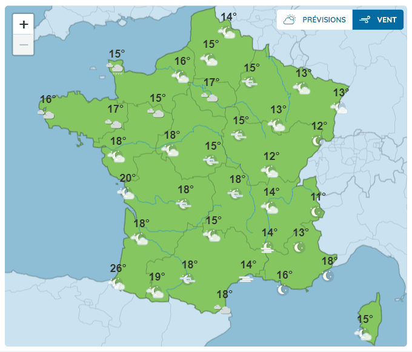

METEO FRANCE
AUJOURD'HUI
DEMAIN
WEEK-END
7 JOURS
15 JOURS
TENDANCES

BULLETIN VIDEO METEO FRANCE
Cet après-midi :
Temps toujours chaud et calme.
Les nuages sont encore présents autour du golfe du Lion vers le sud du Massif central. Quelques éclaircies se développent tout de même dans l'après-midi. Les régions allant de la Provence aux Alpes et la Corse bénéficient d'un ensoleillement généreux.
Le ciel est couvert de la pointe bretonne au Cotentin, des pluies éparses restent possibles dans l'après-midi, quelques éclaircies font leur retour en toute fin de journée. Le vent de sud est sensible.
Sur le reste du pays, le ciel adopte des couleurs plutôt grises avec la présence d'un voile nuageux plus ou moins épais. Le vent d'Autan reste soutenu dans son domaine atteignant 60 à 70 km/h, voire 80 à 90 km/h sur la montagne noire. L'ouest de la chaîne des Pyrénées est balayé par le vent de sud atteignant 60 à 70 km/h.
Les températures restent chaudes notamment sur la moitié sud avec 25 à 28 degrés et toujours des pointes jusqu'à 29 à 30 vers le Pays basque et le Béarn. Ailleurs les maximales sont comprises entre 19 et 24 degrés.
LIRE LE BULLETIN